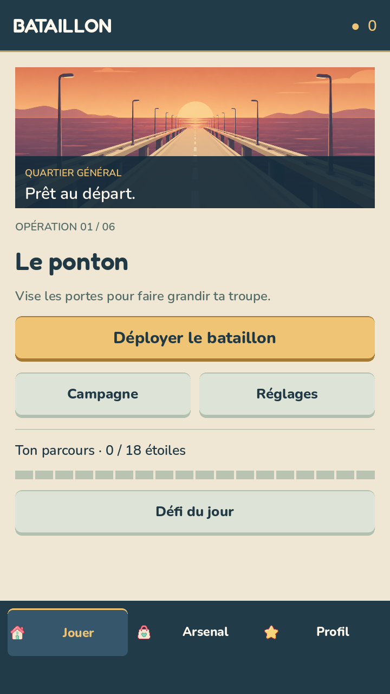
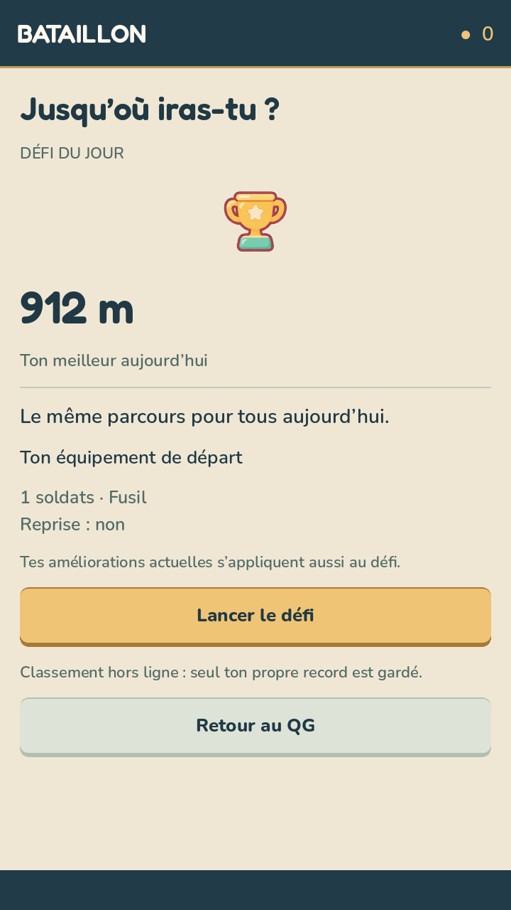

La campagne est gratuite.
Les six missions et le défi quotidien sont accessibles sans achat.
 BATAILLON
Découvrir le jeu
BATAILLON
Découvrir le jeu
FREEMIUM · GRATUIT À JOUER · iPhone & iPad
Six missions et un défi quotidien, sans publicité. Gagne tes renforts avec les pièces de tes parties.

Un freemium qui respecte ton temps
Les six missions et le défi quotidien sont accessibles sans achat.
Les pièces de partie servent à améliorer ton bataillon, sans payer.
Lance une partie directement. Aucune publicité ne coupe l’action.
Transparence : les achats intégrés ne sont pas activés dans la version actuelle.
La règle du terrain
Les bonus rallient des soldats à ta troupe. Un mauvais angle peut transformer une avance en déroute.
Ton bataillon tire en avançant. Aligne les barils utiles et brise les murs qui barrent la route.
Contourne les obstacles, encaisse les vagues et conserve assez de soldats pour le combat final.
Une campagne en six fronts
Du premier ponton au détroit, chaque mission change le rythme et les menaces. Apprends le terrain, améliore ton départ et repars plus fort.
Consulter l’assistance
48° 51′ N · FRONT DU JOURMême parcours. Même jour.
Une nouvelle route chaque jour, identique pour tous. Va le plus loin possible et bats ton propre record.
À tous les bataillons